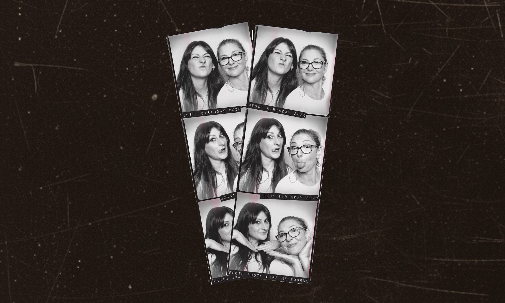

FAUXTO BOOTH · MELBOURNE
The look of film.
The ease of a booth.
Fauxto brings the look and feel of classic analogue photography to a modern, open-style photo booth experience. Vintage-inspired grain, marks and imperfections create an authentic analogue aesthetic without the fuss of traditional film.
ENQUIRETHE FAUXTO EXPERIENCE
A little bit
imperfect.
Forget perfectly polished, overly digital photo booth images. Fauxto embraces the character of classic analogue photography — from soft grain and tonal variation to vintage-inspired marks and beautifully imperfect details.
Guests can sit, pose and have fun in an open-style booth designed to create photographs that feel nostalgic, unexpected and a little bit different.
THE LOOK
Not quite
perfect.
Fauxto is all about the details. Soft grain, tonal variation, vintage-inspired marks, scratches and subtle imperfections come together to recreate the distinctive look of classic analogue photography.
The result is intentionally imperfect — photographs that look weathered, nostalgic and like they've lived a little, rather than perfectly polished digital images.
THE GALLERY
Moments,
captured differently.
YOUR EVENT
Let's make
something memorable.
Weddings, parties, celebrations and events that deserve something a little different.
GET IN TOUCH